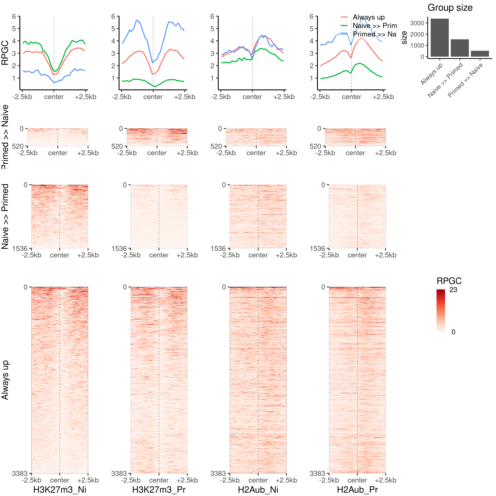
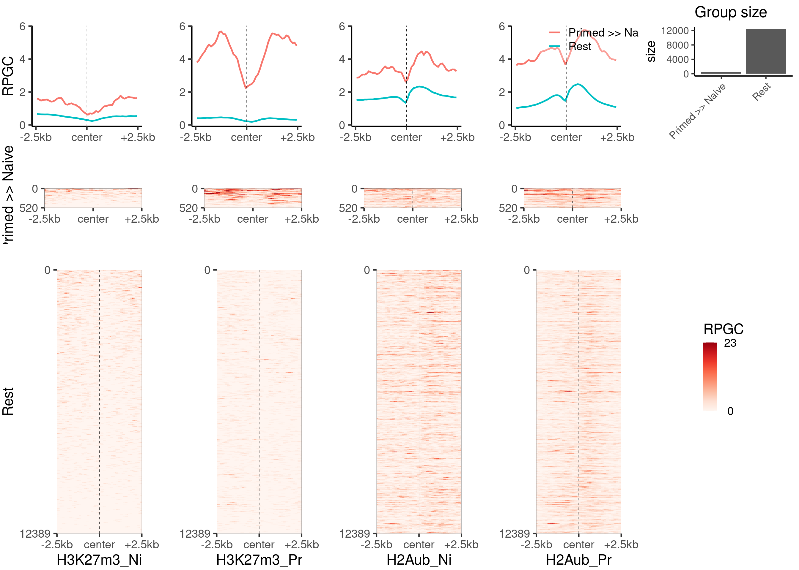
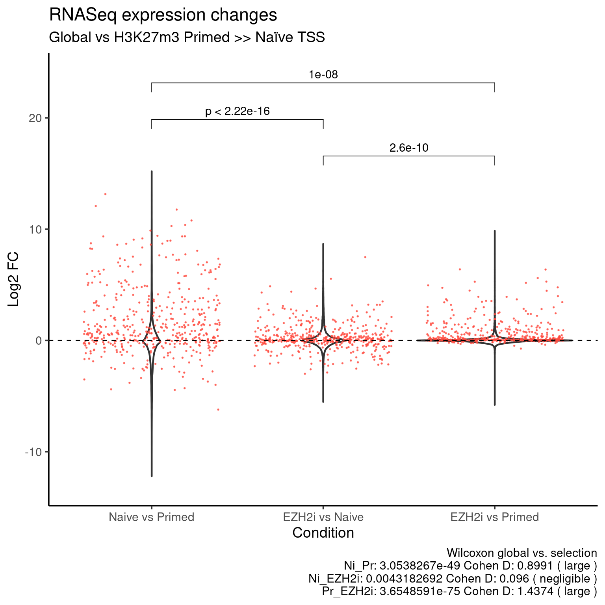

Figure 3.
Carmen Navarro
2021-07-01
Last updated: 2021-07-01
Checks: 7 0
Knit directory: hesc-epigenomics/
This reproducible R Markdown analysis was created with workflowr (version 1.6.2). The Checks tab describes the reproducibility checks that were applied when the results were created. The Past versions tab lists the development history.
Great! Since the R Markdown file has been committed to the Git repository, you know the exact version of the code that produced these results.
Great job! The global environment was empty. Objects defined in the global environment can affect the analysis in your R Markdown file in unknown ways. For reproduciblity it’s best to always run the code in an empty environment.
The command set.seed(20210202) was run prior to running the code in the R Markdown file. Setting a seed ensures that any results that rely on randomness, e.g. subsampling or permutations, are reproducible.
Great job! Recording the operating system, R version, and package versions is critical for reproducibility.
Nice! There were no cached chunks for this analysis, so you can be confident that you successfully produced the results during this run.
Great job! Using relative paths to the files within your workflowr project makes it easier to run your code on other machines.
Great! You are using Git for version control. Tracking code development and connecting the code version to the results is critical for reproducibility.
The results in this page were generated with repository version 70ee455. See the Past versions tab to see a history of the changes made to the R Markdown and HTML files.
Note that you need to be careful to ensure that all relevant files for the analysis have been committed to Git prior to generating the results (you can use wflow_publish or wflow_git_commit). workflowr only checks the R Markdown file, but you know if there are other scripts or data files that it depends on. Below is the status of the Git repository when the results were generated:
Ignored files:
Ignored: .Rhistory
Ignored: .Rproj.user/
Ignored: data/bed/
Ignored: data/bw
Ignored: data/igv/
Ignored: data/liftover/
Ignored: data/other/
Ignored: data/peaks
Ignored: data/rnaseq/
Untracked files:
Untracked: analysis/master_bins_table.Rmd
Untracked: code/fig3_k27_groups.R
Untracked: data/meta/Kumar_2020_bins_panels_design.csv
Untracked: data/meta/Kumar_2020_master_bins_10kb_table_raw.tsv
Untracked: data/meta/Kumar_2020_master_bins_5kb_table_raw.tsv
Untracked: data/meta/Kumar_2020_master_bins_5kb_table_raw.zip
Untracked: data/meta/Kumar_2020_master_bins_5kb_table_replicates_only.tsv
Untracked: data/meta/Kumar_2020_master_bins_5kb_table_shrunk.tsv
Untracked: data/meta/Kumar_2020_master_bins_5kb_table_shrunk.zip
Untracked: data/meta/Kumar_2020_master_gene_table.zip
Untracked: data/meta/Kumar_2020_master_gene_table_rnaseq_shrunk.tsv
Untracked: data/meta/Kumar_2020_master_gene_table_rnaseq_shrunk_plus_annotations.tsv
Untracked: data/meta/Kumar_2020_master_gene_table_rnaseq_shrunk_plus_annotations.zip
Untracked: data/meta/Kumar_2020_promoters_panels_design.csv
Untracked: data/meta/gene_names_bivalent.tsv
Untracked: figures_data/
Untracked: output/fig3_violin_rnaseq_ratios_naive_higher_than_pr.svg
Untracked: output/fig3_violin_rnaseq_ratios_primed_higher_than_ni.svg
Note that any generated files, e.g. HTML, png, CSS, etc., are not included in this status report because it is ok for generated content to have uncommitted changes.
These are the previous versions of the repository in which changes were made to the R Markdown (analysis/fig_03_h3k27m3_groups.Rmd) and HTML (docs/fig_03_h3k27m3_groups.html) files. If you’ve configured a remote Git repository (see ?wflow_git_remote), click on the hyperlinks in the table below to view the files as they were in that past version.
| File | Version | Author | Date | Message |
|---|---|---|---|---|
| Rmd | 70ee455 | C. Navarro | 2021-07-01 | wflow_publish(“./analysis/fig_03_h3k27m3_groups.Rmd”) |
Summary
This is the supplementary notebook for figure 3.
H3K27m3 groups heatmap panels
genes_loci <- import("./data/bed/Kumar_2020/Kumar_2020_genes_hg38_UCSC.bed")
genes_tss <- promoters(genes_loci, upstream = 2500, downstream = 2500)
filter_by_k27_group <- function(gr, df, group) {
gr[gr$name %in% df[df$k27_bivalency_grp == group, "name"], ]
}
groups <- levels(genes$k27_bivalency_grp)
genes_k27_loci_groups <- lapply(groups, filter_by_k27_group, gr=genes_tss, df = genes)
names(genes_k27_loci_groups) <- groups
ns_gene_names <- genes %>% filter(k27_bivalency_grp == "None" & (H3K4m3_Ni_mean_cov > 2 | H3K4m3_Pr_mean_cov > 2)) %>% select(name)
genes_k27_ns_w_k4 <- genes_tss[genes_tss$name %in% ns_gene_names$name, ]
plot_bw_heatmap_panel(
c(bwfiles$k27[c(1, 3)], bwfiles$ub[c(1, 3)]),
list(genes_k27_loci_groups$Pr_higher_than_Ni,
genes_k27_loci_groups$Ni_higher_than_Pr,
genes_k27_loci_groups$Always_up
),
c("H3K27m3_Ni", "H3K27m3_Pr", "H2Aub_Ni", "H2Aub_Pr"),
c("Primed >> Naive", "Naive >> Primed", "Always up"),
global_scale = TRUE,
proportional = TRUE,
mode = "center"
)
Plot the second part of the heatmap panel.
plot_bw_heatmap_panel(
c(bwfiles$k27[c(1, 3)], bwfiles$ub[c(1, 3)]),
list(genes_k27_loci_groups$Ni_higher_than_Pr, genes_k27_ns_w_k4),
c("H3K27m3_Ni", "H3K27m3_Pr", "H2Aub_Ni", "H2Aub_Pr"),
c("Primed >> Naive", "Rest"),
global_scale = TRUE,
proportional = TRUE,
mode = "center",
zmin = 0,
zmax = 23
)
RNA-seq ratios at H3K27m3 groups
H327m3 Naive >> Primed
df <-
genes[, c(
"name",
"RNASeq_DS_Pr_vs_Ni_log2FoldChange",
"RNASeq_DS_EZH2i_vs_Ni_log2FoldChange",
"RNASeq_DS_EZH2i_vs_Pr_log2FoldChange"
)]
colnames(df) <- c("name", "Primed vs Naive", "EZH2i vs Naive", "EZH2i vs Primed")
df_k27_up <- df[df$name %in% genes_k27_loci_groups$Ni_higher_than_Pr$name, ]
df_long <- df %>% pivot_longer(!name, names_to = "group", values_to = "fc")
df_long_k27 <- df_k27_up %>% pivot_longer(!name, names_to = "group", values_to = "fc")
df_long$group <- factor(df_long$group, levels = c("Primed vs Naive", "EZH2i vs Naive", "EZH2i vs Primed"))
df_long_k27$group <- factor(df_long_k27$group, levels = c("Primed vs Naive", "EZH2i vs Naive", "EZH2i vs Primed"))
# Stats subset vs global
ni_pr_test <- wilcox.test(df_k27_up[, "Primed vs Naive"],
df[!df$name %in% df_k27_up$name , "Primed vs Naive"], na.rm = T)
ni_pr_effect <- cohen.d(df_k27_up[, "Primed vs Naive"],
df[!df$name %in% df_k27_up$name , "Primed vs Naive"], na.rm = T)
col <- "EZH2i vs Naive"
ni_ezh2i_test <- wilcox.test(df_k27_up[, col],
df[!df$name %in% df_k27_up$name , col], na.rm = T)
ni_ezh2i_effect <- cohen.d(df_k27_up[, col],
df[!df$name %in% df_k27_up$name , col], na.rm = T)
col <- "EZH2i vs Primed"
pr_ezh2i_test <- wilcox.test(df_k27_up[, col],
df[!df$name %in% df_k27_up$name , col], na.rm = T)
pr_ezh2i_effect <- cohen.d(df_k27_up[, col],
df[!df$name %in% df_k27_up$name , col], na.rm = T)
stats_caption <- paste("Wilcoxon global vs. selection",
paste("Ni_Pr:", format(ni_pr_test$p.value, digits=8),
"Cohen D:", round(ni_pr_effect$estimate, digits = 4),
"(", ni_pr_effect$magnitude, ")"),
paste("Ni_EZH2i:", format(ni_ezh2i_test$p.value, digits=8),
"Cohen D:", round(ni_ezh2i_effect$estimate, digits = 4),
"(", ni_ezh2i_effect$magnitude, ")"),
paste("Pr_EZH2i:", format(pr_ezh2i_test$p.value, digits=8),
"Cohen D:", round(pr_ezh2i_effect$estimate, digits = 4),
"(", pr_ezh2i_effect$magnitude, ")"),
sep = "\n")
my_comparisons <- list(c("EZH2i vs Naive", "EZH2i vs Primed"),
c("Primed vs Naive", "EZH2i vs Naive"),
c("Primed vs Naive", "EZH2i vs Primed"))
k27_up_color <- "#009784"
ggplot(data=df_long, aes(x = group, y = fc)) +
geom_violin(size = 0.8) +
stat_compare_means(data=df_long_k27,
comparisons = my_comparisons, method = "wilcox.test", paired = TRUE) +
rasterize(
geom_jitter(data=df_long_k27, color = k27_up_color, alpha = 0.7, size = 0.1),
dpi = 300) +
geom_hline (yintercept = 0, linetype = "dashed") +
coord_cartesian(ylim = c(-13, 24)) +
theme_default(base_size = 14) +
labs(x = "Condition",
y = "Log2 FC",
title = "RNASeq expression changes",
subtitle = "Global vs H3K27m3 Naïve >> Primed TSS",
caption = stats_caption)
write.table(df_long[!is.na(df_long$fc), ],
file = "./figures_data/fig3_violin_k27_ni_higher_violin.tsv",
col.names = T, sep = "\t", quote = F, row.names = F)
write.table(df_long_k27[!is.na(df_long_k27$fc), ],
file = "./figures_data/fig3_violin_k27_ni_higher_jitter_k27_values.tsv",
col.names = T, sep = "\t", quote = F, row.names = F)H327m3 Primed >> Naive
df <-
genes[, c(
"name",
"RNASeq_DS_Pr_vs_Ni_log2FoldChange",
"RNASeq_DS_EZH2i_vs_Ni_log2FoldChange",
"RNASeq_DS_EZH2i_vs_Pr_log2FoldChange"
)]
colnames(df) <- c("name", "Primed vs Naive", "EZH2i vs Naive", "EZH2i vs Primed")
df_k27_up <- df[df$name %in% genes_k27_loci_groups$Pr_higher_than_Ni$name, ]
df_k27_up$`Primed vs Naive` <- -df_k27_up$`Primed vs Naive`
df$`Primed vs Naive` <- -df$`Primed vs Naive`
df_long <- df %>% pivot_longer(!name, names_to = "group", values_to = "fc")
df_long_k27 <- df_k27_up %>% pivot_longer(!name, names_to = "group", values_to = "fc")
df_long$group <- factor(df_long$group, levels = c("Primed vs Naive", "EZH2i vs Naive", "EZH2i vs Primed"))
df_long_k27$group <- factor(df_long_k27$group, levels = c("Primed vs Naive", "EZH2i vs Naive", "EZH2i vs Primed"))
levels(df_long$group) <- c("Naive vs Primed", "EZH2i vs Naive", "EZH2i vs Primed")
levels(df_long_k27$group) <- c("Naive vs Primed", "EZH2i vs Naive", "EZH2i vs Primed")
my_comparisons <- list(c("EZH2i vs Naive", "EZH2i vs Primed"),
c("Naive vs Primed", "EZH2i vs Naive"),
c("Naive vs Primed", "EZH2i vs Primed"))
# Stats subset vs global
ni_pr_test <- wilcox.test(df_k27_up[, "Primed vs Naive"],
df[!df$name %in% df_k27_up$name , "Primed vs Naive"], na.rm = T)
ni_pr_effect <- cohen.d(df_k27_up[, "Primed vs Naive"],
df[!df$name %in% df_k27_up$name , "Primed vs Naive"], na.rm = T)
col <- "EZH2i vs Naive"
ni_ezh2i_test <- wilcox.test(df_k27_up[, col],
df[!df$name %in% df_k27_up$name , col], na.rm = T)
ni_ezh2i_effect <- cohen.d(df_k27_up[, col],
df[!df$name %in% df_k27_up$name , col], na.rm = T)
col <- "EZH2i vs Primed"
pr_ezh2i_test <- wilcox.test(df_k27_up[, col],
df[!df$name %in% df_k27_up$name , col], na.rm = T)
pr_ezh2i_effect <- cohen.d(df_k27_up[, col],
df[!df$name %in% df_k27_up$name , col], na.rm = T)
stats_caption <- paste("Wilcoxon global vs. selection",
paste("Ni_Pr:", format(ni_pr_test$p.value, digits=8),
"Cohen D:", round(ni_pr_effect$estimate, digits = 4),
"(", ni_pr_effect$magnitude, ")"),
paste("Ni_EZH2i:", format(ni_ezh2i_test$p.value, digits=8),
"Cohen D:", round(ni_ezh2i_effect$estimate, digits = 4),
"(", ni_ezh2i_effect$magnitude, ")"),
paste("Pr_EZH2i:", format(pr_ezh2i_test$p.value, digits=8),
"Cohen D:", round(pr_ezh2i_effect$estimate, digits = 4),
"(", pr_ezh2i_effect$magnitude, ")"),
sep = "\n")
k27_up_color <- "#ff4b40"
ggplot(data=df_long, aes(x = group, y = fc)) +
geom_violin(size = 0.8) +
stat_compare_means(
data=df_long_k27, comparisons = my_comparisons,
method = "wilcox.test", paired = TRUE) +
rasterize(
geom_jitter(data=df_long_k27, color = k27_up_color, alpha = 0.7, size = 0.1),
dpi = 300) +
geom_hline (yintercept = 0, linetype = "dashed") +
coord_cartesian(ylim = c(-13, 24)) +
theme_default(base_size = 14) +
labs(x = "Condition",
y = "Log2 FC",
title = "RNASeq expression changes",
subtitle = "Global vs H3K27m3 Primed >> Naïve TSS",
caption = stats_caption)
write.table(df_long[!is.na(df_long$fc), ],
file = "./figures_data/fig3_violin_k27_pr_higher_violin.tsv",
col.names = T, sep = "\t", quote = F, row.names = F)
write.table(df_long_k27[!is.na(df_long_k27$fc), ],
file = "./figures_data/fig3_violin_k27_pr_higher_jitter_k27_values.tsv",
col.names = T, sep = "\t", quote = F, row.names = F)
sessionInfo()R version 4.1.0 (2021-05-18)
Platform: x86_64-pc-linux-gnu (64-bit)
Running under: Ubuntu 20.04.2 LTS
Matrix products: default
BLAS: /usr/lib/x86_64-linux-gnu/openblas-pthread/libblas.so.3
LAPACK: /usr/lib/x86_64-linux-gnu/openblas-pthread/liblapack.so.3
locale:
[1] LC_CTYPE=en_US.UTF-8 LC_NUMERIC=C
[3] LC_TIME=sv_SE.UTF-8 LC_COLLATE=en_US.UTF-8
[5] LC_MONETARY=sv_SE.UTF-8 LC_MESSAGES=en_US.UTF-8
[7] LC_PAPER=sv_SE.UTF-8 LC_NAME=C
[9] LC_ADDRESS=C LC_TELEPHONE=C
[11] LC_MEASUREMENT=sv_SE.UTF-8 LC_IDENTIFICATION=C
attached base packages:
[1] parallel stats4 stats graphics grDevices utils datasets
[8] methods base
other attached packages:
[1] svglite_2.0.0 wigglescout_0.13.1 cowplot_1.1.1
[4] ggrastr_0.2.3 ggpubr_0.4.0 effsize_0.8.1
[7] forcats_0.5.1 stringr_1.4.0 dplyr_1.0.7
[10] purrr_0.3.4 readr_1.4.0 tidyr_1.1.3
[13] tibble_3.1.2 ggplot2_3.3.5 tidyverse_1.3.1
[16] rtracklayer_1.52.0 GenomicRanges_1.44.0 GenomeInfoDb_1.28.0
[19] IRanges_2.26.0 S4Vectors_0.30.0 BiocGenerics_0.38.0
[22] workflowr_1.6.2
loaded via a namespace (and not attached):
[1] ggbeeswarm_0.6.0 colorspace_2.0-2
[3] ggsignif_0.6.2 rjson_0.2.20
[5] ellipsis_0.3.2 rio_0.5.27
[7] rprojroot_2.0.2 XVector_0.32.0
[9] fs_1.5.0 rstudioapi_0.13
[11] farver_2.1.0 listenv_0.8.0
[13] furrr_0.2.3 fansi_0.5.0
[15] lubridate_1.7.10 xml2_1.3.2
[17] codetools_0.2-18 knitr_1.33
[19] jsonlite_1.7.2 Cairo_1.5-12.2
[21] Rsamtools_2.8.0 broom_0.7.8
[23] dbplyr_2.1.1 compiler_4.1.0
[25] httr_1.4.2 backports_1.2.1
[27] assertthat_0.2.1 Matrix_1.3-4
[29] cli_3.0.0 later_1.2.0
[31] htmltools_0.5.1.1 tools_4.1.0
[33] gtable_0.3.0 glue_1.4.2
[35] GenomeInfoDbData_1.2.6 reshape2_1.4.4
[37] Rcpp_1.0.6 carData_3.0-4
[39] Biobase_2.52.0 cellranger_1.1.0
[41] jquerylib_0.1.4 vctrs_0.3.8
[43] Biostrings_2.60.1 xfun_0.24
[45] globals_0.14.0 openxlsx_4.2.4
[47] rvest_1.0.0 lifecycle_1.0.0
[49] restfulr_0.0.13 rstatix_0.7.0
[51] XML_3.99-0.6 future_1.21.0
[53] zlibbioc_1.38.0 scales_1.1.1
[55] hms_1.1.0 promises_1.2.0.1
[57] MatrixGenerics_1.4.0 SummarizedExperiment_1.22.0
[59] RColorBrewer_1.1-2 yaml_2.2.1
[61] curl_4.3.2 sass_0.4.0
[63] stringi_1.6.2 highr_0.9
[65] BiocIO_1.2.0 zip_2.2.0
[67] BiocParallel_1.26.0 systemfonts_1.0.2
[69] rlang_0.4.11 pkgconfig_2.0.3
[71] matrixStats_0.59.0 bitops_1.0-7
[73] evaluate_0.14 lattice_0.20-44
[75] labeling_0.4.2 GenomicAlignments_1.28.0
[77] tidyselect_1.1.1 parallelly_1.26.1
[79] plyr_1.8.6 magrittr_2.0.1
[81] R6_2.5.0 generics_0.1.0
[83] DelayedArray_0.18.0 DBI_1.1.1
[85] pillar_1.6.1 haven_2.4.1
[87] whisker_0.4 foreign_0.8-81
[89] withr_2.4.2 abind_1.4-5
[91] RCurl_1.98-1.3 modelr_0.1.8
[93] crayon_1.4.1 car_3.0-11
[95] utf8_1.2.1 rmarkdown_2.9
[97] grid_4.1.0 readxl_1.3.1
[99] data.table_1.14.0 git2r_0.28.0
[101] reprex_2.0.0 digest_0.6.27
[103] httpuv_1.6.1 munsell_0.5.0
[105] beeswarm_0.4.0 vipor_0.4.5
[107] bslib_0.2.5.1